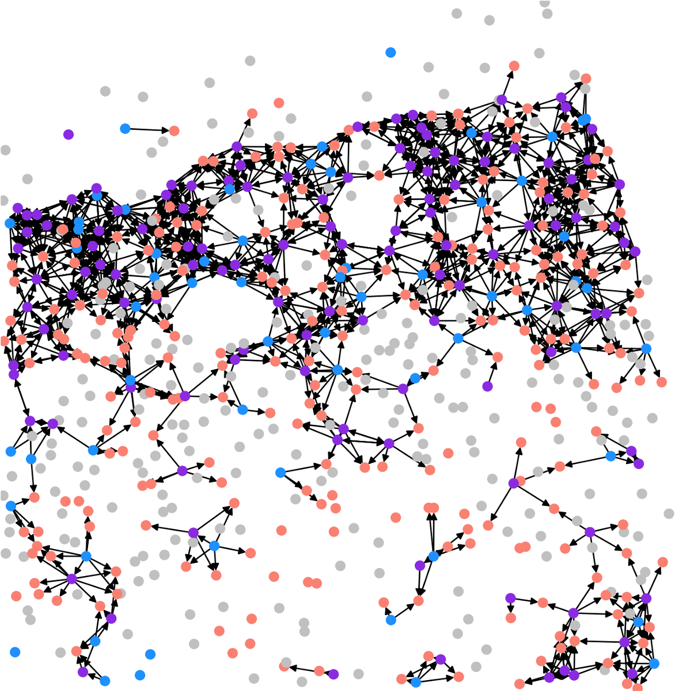
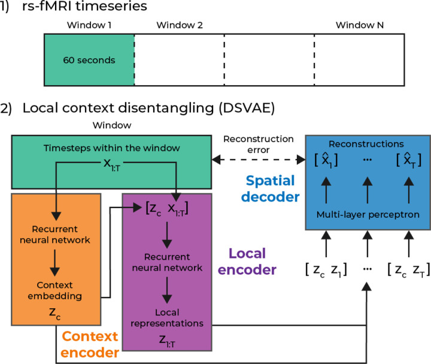
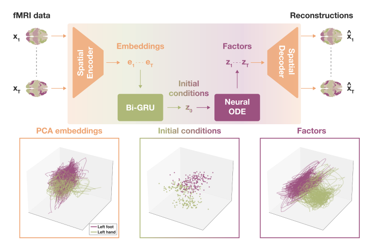
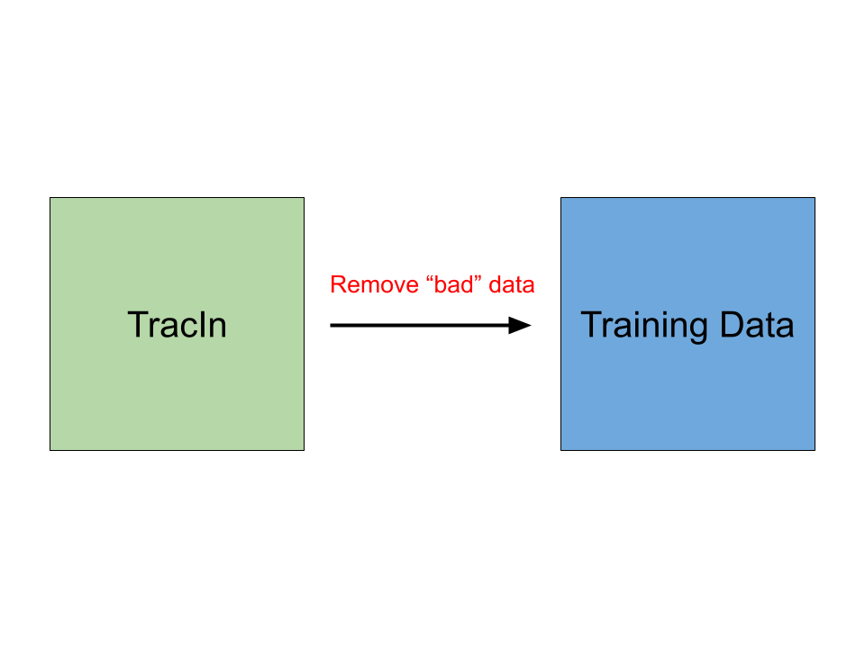

|
Donghyun Kim
I am a rising senior studying computer science at Georgia Tech (Intelligence and Theory threads).
I will be applying to PhD programs in machine learning in Fall 2024.
I am interested in using machine learning to understand biology and neuroscience. I hope to analyze single cell genomic and time-series data.
Email /
Scholar /
Github
|
|
|

|
Methods for analysis of spatial peptidergic communication networks
Donghyun Kim, Rohan Gala
Allen Institute Summer Internship, 2024 (Continuing work in Fall 2024)
Peptidergic communication networks in spatial transcriptomic data can be viewed as directed multilayer graphs. We develop computational methods to study the organization of these graphs.
|
|

|
Providing context: Extracting non-linear and dynamic temporal motifs from brain activity
Eloy Geenjaar, Donghyun Kim, Vince Calhoun
Preprint, 2024
bibtex
We introduce a temporal representation learning model for resting-state fMRI data that can find novel and interesting temporal motifs that relate brain activity to schizophrenia diagnosis.
|
|

|
Learning low-dimensional dynamics from whole-brain data improves task capture
Eloy Geenjaar, Donghyun Kim, Riyasat Ohib, Marlena Duda, Amrit Kashyap, Sergey Plis, Vince Calhoun
NeurIPS Workshop (DGM4H, Medical Imaging Meets NeurIPS), 2023
bibtex
We propose a model to learn low-dimensional dynamics from voxel-based fMRI data that captures fMRI tasks better.
|
|

|
Recommender System Attribution
Sejoon Oh, Donghyun Kim, Srijan Kumar
Project on hold, 2022-2023
We hoped to explain and improve the performance of recommendation systems by estimating the influence of each training point on the model’s prediction and removing or correcting training examples with adverse influence.
|
Industry Experience
Toast
Software Engineer Intern, Payments - Data Team 2023
Contributed to Apache Camel applications
NCR
Software Engineer Intern, Computer Vision and Machine Learning Team 2022
Spearheaded development of new ML models, implementing a Vision Transformer model to classify scanned images of produce (new model integrated into different team project)
|
Honors and Awards
Georgia Tech’s President’s Undergraduate Research Award Recipient 2024
Korean-American Scientists and Engineers Association Undergraduate Scholarship Recipient 2024
IEEE Healthcare Summit Data Hackathon (scRNA-seq track) Runner-up 2021
|
Leadership and Volunteering
President | The Artificial Intelligence for Medicine and Healthcare Society 2022-2023
Vice President of Finance | The Artificial Intelligence for Medicine and Healthcare Society 2021-2022
Undergraduate Research Ambassador | Undergraduate Research Opportunities Program 2022-2023
Vice President of Sponsership | Korean-American Scientists and Engineers Association 2024-2025
|
|
{kind=link}